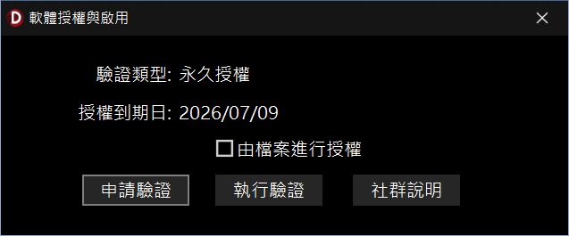

軟體授權與啟用說明
本功能可用於檢視 InfoRec 軟體（以下簡稱 InfoRec）的授權狀態，或進行軟體授權相關事宜。
一、 授權狀態資訊
-
狀態顯示：
- 「驗證類型」：顯示目前軟體的授權版本與解鎖狀態。
- 「授權到期日」：顯示當前軟體使用權限的有效截止日期。
二、 授權申請及執行功能
-
執行步驟：
- 「由檔案進行授權」：讀取授權檔案後，再執行「申請驗證」。
- 「申請驗證」：用於軟體授權申請、驗證作業。
- 「執行驗證」：取得雲端驗證資料，點擊此按鈕如有搜尋到此軟體的授權資料時，可在線上完成授權。
- 「社群說明」：取得本軟體網站說明、社群資源或問題建議及回應方式。
-
線上申請授權：
- 若需開通新授權、變更綁定裝置或申請離線驗證檔案，請點擊進入 申請軟體授權 功能頁面進行詳細資料填寫與申請。

軟體授權與啟用說明視窗